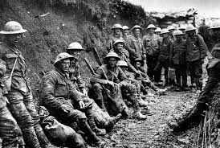
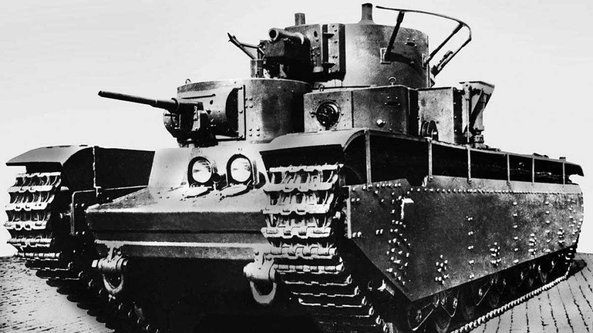
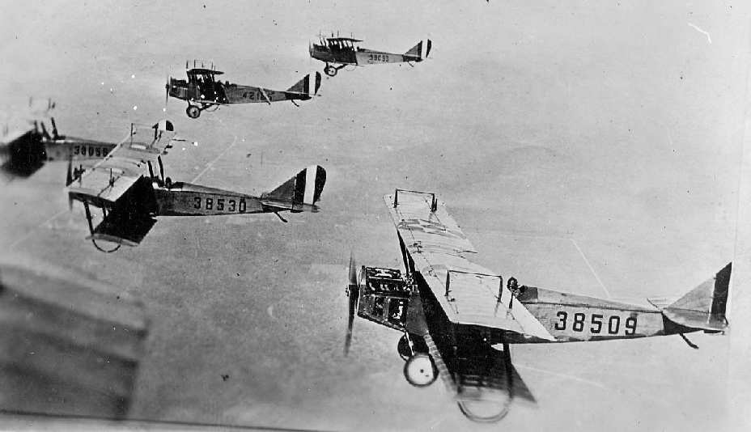
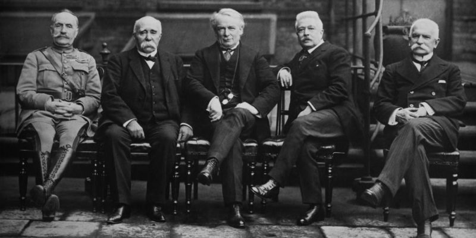
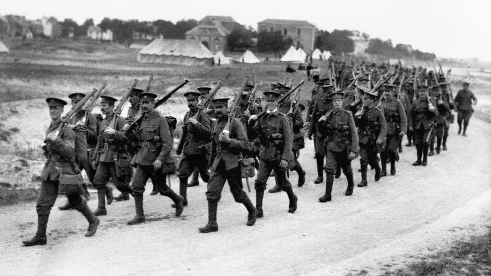
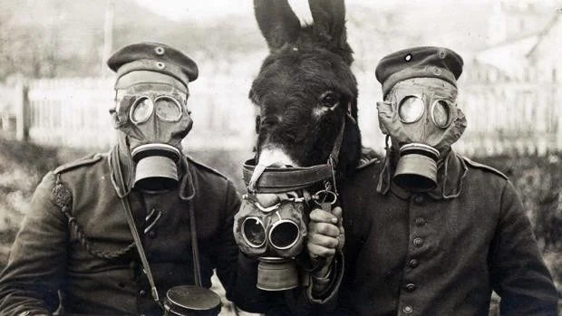

Galería - Primera Guerra Mundial
Imágenes históricas del conflicto que cambió el mundo (1914-1918)

Soldados en las trincheras
La vida en las trincheras fue una de las experiencias más duras para los soldados.

Primeros tanques británicos
Los Mark I fueron los primeros tanques utilizados en batalla (1916).

Aviones en combate
La aviación tuvo un desarrollo acelerado durante la guerra.

Tratado de Versalles
La firma del tratado que oficialmente puso fin a la guerra el 28 de junio de 1919.

Batalla del Somme
Uno de los enfrentamientos mas sangrientos, con mas de un millon de bajas

Guerra Quimica
Primer uso a gran escala de armas quimicas en Ypres (1915).